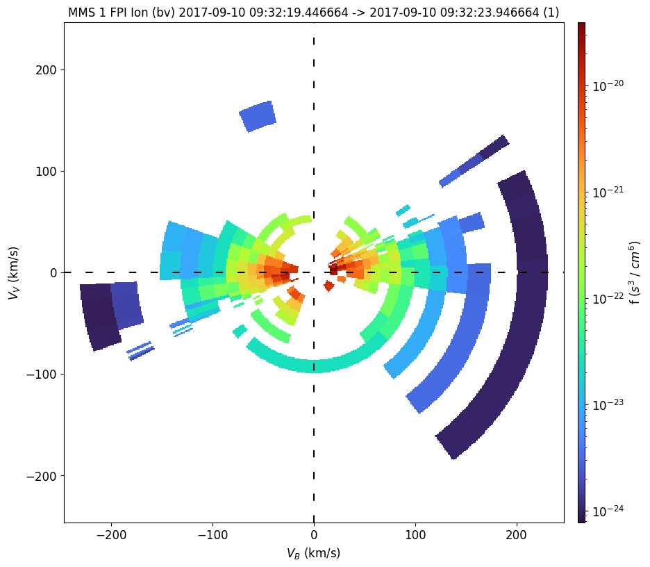
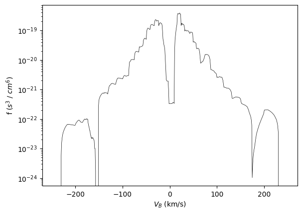
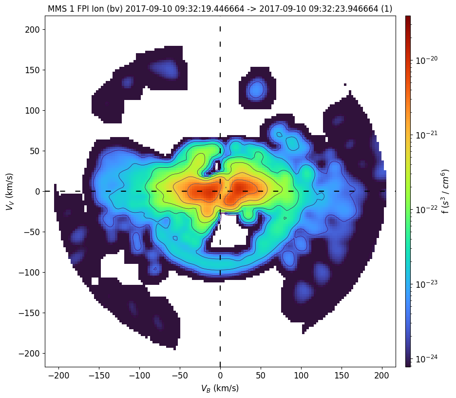
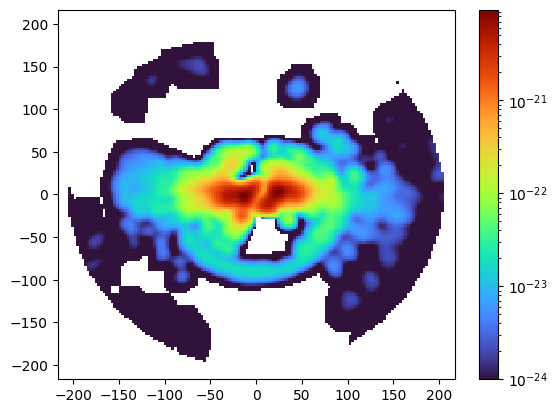

Ion Distribution From MMS#
This notebook shows how to create 2D slices of 3D particle data from FPI using PySPEDAS. pyspedas is the Python implementation of SPEDAS orginally coded in IDL. It is not as feature-complete as the IDL version.
Obtaining MMS FPI Data#
Here is a recorded bi-directional field-aligned beam of 0-300 eV ions observed by FPI. Due to a bug in the time argument of mms_part_slice2d, we currently need to specify the start and end time of the interval as a list.
from pyspedas import time_double, time_string
time = "2017-09-10/09:32:20"
window = 4.
trange = [time_double(time)-window/2, time_double(time)+window/2]
time_string(trange)
['2017-09-10 09:32:18.000000', '2017-09-10 09:32:22.000000']
The data is downloaded automatically to the pydata folder under the current directory if not found.
from pyspedas.projects.mms import mms_part_slice2d
mms_part_slice2d(
time=time,
instrument="fpi",
species="i",
rotation="bv",
erange=[0, 300],
cmap="turbo",
)
15-Feb-26 23:07:08: Error while reading SDC username/password; defaulting to public user...
15-Feb-26 23:07:08: Downloading mms1_fpi_fast_l2_dis-dist_20170910080000_v3.4.0.cdf to pydata/mms1/fpi/fast/l2/dis-dist/2017/09
15-Feb-26 23:07:10: Loading files for group: probe: 1, drate: fast, level: l2, datatype: dis-dist, after sorting and filtering:
15-Feb-26 23:07:10: pydata/mms1/fpi/fast/l2/dis-dist/2017/09/mms1_fpi_fast_l2_dis-dist_20170910080000_v3.4.0.cdf
15-Feb-26 23:07:12: The name mms1_dis_pitchangdist_lowen_fast is currently not in pyspedas
15-Feb-26 23:07:12: The name mms1_dis_pitchangdist_miden_fast is currently not in pyspedas
15-Feb-26 23:07:12: The name mms1_dis_pitchangdist_highen_fast is currently not in pyspedas
15-Feb-26 23:07:12: Downloading mms1_fgm_srvy_l2_20170910_v5.104.0.cdf to pydata/mms1/fgm/srvy/l2/2017/09
15-Feb-26 23:07:14: Loading files for group: probe: 1, drate: srvy, level: l2, datatype: , after sorting and filtering:
15-Feb-26 23:07:14: pydata/mms1/fgm/srvy/l2/2017/09/mms1_fgm_srvy_l2_20170910_v5.104.0.cdf
15-Feb-26 23:07:19: Downloading mms1_fpi_fast_l2_dis-moms_20170910080000_v3.4.0.cdf to pydata/mms1/fpi/fast/l2/dis-moms/2017/09
15-Feb-26 23:07:19: Loading files for group: probe: 1, drate: fast, level: l2, datatype: dis-moms, after sorting and filtering:
15-Feb-26 23:07:19: pydata/mms1/fpi/fast/l2/dis-moms/2017/09/mms1_fpi_fast_l2_dis-moms_20170910080000_v3.4.0.cdf
15-Feb-26 23:07:20: The name mms1_dis_pitchangdist_lowen_fast is currently not in pyspedas
15-Feb-26 23:07:20: The name mms1_dis_pitchangdist_miden_fast is currently not in pyspedas
15-Feb-26 23:07:20: The name mms1_dis_pitchangdist_highen_fast is currently not in pyspedas
15-Feb-26 23:07:20: Averaging mms1_fgm_b_gse_srvy_l2_bvec
15-Feb-26 23:07:20: Averaging mms1_dis_bulkv_gse_fast
15-Feb-26 23:07:20: Aligning slice plane to: bv
15-Feb-26 23:07:21: Finished slice at 2017-09-10 09:32:19.446664

Basic operations#
To return the slice data structure instead of plotting, set the return_slice keyword to True:
the_slice = mms_part_slice2d(
return_slice=True,
time=time,
instrument="fpi",
species="i",
rotation="bv",
erange=[0, 300],
)
15-Feb-26 23:07:22: Loading files for group: probe: 1, drate: fast, level: l2, datatype: dis-dist, after sorting and filtering:
15-Feb-26 23:07:22: pydata/mms1/fpi/fast/l2/dis-dist/2017/09/mms1_fpi_fast_l2_dis-dist_20170910080000_v3.4.0.cdf
15-Feb-26 23:07:24: The name mms1_dis_pitchangdist_lowen_fast is currently not in pyspedas
15-Feb-26 23:07:24: The name mms1_dis_pitchangdist_miden_fast is currently not in pyspedas
15-Feb-26 23:07:24: The name mms1_dis_pitchangdist_highen_fast is currently not in pyspedas
15-Feb-26 23:07:24: Loading files for group: probe: 1, drate: srvy, level: l2, datatype: , after sorting and filtering:
15-Feb-26 23:07:24: pydata/mms1/fgm/srvy/l2/2017/09/mms1_fgm_srvy_l2_20170910_v5.104.0.cdf
15-Feb-26 23:07:29: Loading files for group: probe: 1, drate: fast, level: l2, datatype: dis-moms, after sorting and filtering:
15-Feb-26 23:07:29: pydata/mms1/fpi/fast/l2/dis-moms/2017/09/mms1_fpi_fast_l2_dis-moms_20170910080000_v3.4.0.cdf
15-Feb-26 23:07:29: The name mms1_dis_pitchangdist_lowen_fast is currently not in pyspedas
15-Feb-26 23:07:29: The name mms1_dis_pitchangdist_miden_fast is currently not in pyspedas
15-Feb-26 23:07:29: The name mms1_dis_pitchangdist_highen_fast is currently not in pyspedas
15-Feb-26 23:07:29: Averaging mms1_fgm_b_gse_srvy_l2_bvec
15-Feb-26 23:07:29: Averaging mms1_dis_bulkv_gse_fast
15-Feb-26 23:07:29: Aligning slice plane to: bv
15-Feb-26 23:07:30: Finished slice at 2017-09-10 09:32:19.446664
The slice is stored as a dictionary:
the_slice.keys()
dict_keys(['project_name', 'spacecraft', 'data_name', 'units_name', 'species', 'xyunits', 'rotation', 'energy', 'trange', 'zrange', 'rrange', 'rlog', 'interpolation', 'n_samples', 'data', 'xgrid', 'ygrid'])
We can create 1D cuts through the 2D slice by specifying the velocity range:
(hyzhou: why is the unit still the same as in 2D/3D?)
from pyspedas import slice1d_plot as plot
plot(the_slice, 'x', [-100, 100]) # summed from Vv=[-100, 100]

FPI ions with 2D interpolation#
The data are rotated such that the x axis is parallel to B field and the bulk velocity defines the x-y plane, and plotted using 2D interpolation (data points within the specified theta or z-axis range are projected onto the slice plane and linearly interpolated onto a regular 2D grid). The default theta range is [-20, +20].
mms_part_slice2d(interpolation="2d", time=time, instrument="fpi", species="i", rotation="bv", erange=[0, 300], cmap="turbo")
15-Feb-26 23:07:31: Loading files for group: probe: 1, drate: fast, level: l2, datatype: dis-dist, after sorting and filtering:
15-Feb-26 23:07:31: pydata/mms1/fpi/fast/l2/dis-dist/2017/09/mms1_fpi_fast_l2_dis-dist_20170910080000_v3.4.0.cdf
15-Feb-26 23:07:33: The name mms1_dis_pitchangdist_lowen_fast is currently not in pyspedas
15-Feb-26 23:07:33: The name mms1_dis_pitchangdist_miden_fast is currently not in pyspedas
15-Feb-26 23:07:33: The name mms1_dis_pitchangdist_highen_fast is currently not in pyspedas
15-Feb-26 23:07:33: Loading files for group: probe: 1, drate: srvy, level: l2, datatype: , after sorting and filtering:
15-Feb-26 23:07:33: pydata/mms1/fgm/srvy/l2/2017/09/mms1_fgm_srvy_l2_20170910_v5.104.0.cdf
15-Feb-26 23:07:38: Loading files for group: probe: 1, drate: fast, level: l2, datatype: dis-moms, after sorting and filtering:
15-Feb-26 23:07:38: pydata/mms1/fpi/fast/l2/dis-moms/2017/09/mms1_fpi_fast_l2_dis-moms_20170910080000_v3.4.0.cdf
15-Feb-26 23:07:39: The name mms1_dis_pitchangdist_lowen_fast is currently not in pyspedas
15-Feb-26 23:07:39: The name mms1_dis_pitchangdist_miden_fast is currently not in pyspedas
15-Feb-26 23:07:39: The name mms1_dis_pitchangdist_highen_fast is currently not in pyspedas
15-Feb-26 23:07:39: Averaging mms1_fgm_b_gse_srvy_l2_bvec
15-Feb-26 23:07:39: Averaging mms1_dis_bulkv_gse_fast
15-Feb-26 23:07:39: Aligning slice plane to: bv
15-Feb-26 23:07:39: Finished slice at 2017-09-10 09:32:19.446664

slicemms2d = mms_part_slice2d(return_slice=True, interpolation="2d", time=time, instrument="fpi", species="i", rotation="bv", erange=[0, 300])
15-Feb-26 23:07:40: Loading files for group: probe: 1, drate: fast, level: l2, datatype: dis-dist, after sorting and filtering:
15-Feb-26 23:07:40: pydata/mms1/fpi/fast/l2/dis-dist/2017/09/mms1_fpi_fast_l2_dis-dist_20170910080000_v3.4.0.cdf
15-Feb-26 23:07:42: The name mms1_dis_pitchangdist_lowen_fast is currently not in pyspedas
15-Feb-26 23:07:42: The name mms1_dis_pitchangdist_miden_fast is currently not in pyspedas
15-Feb-26 23:07:42: The name mms1_dis_pitchangdist_highen_fast is currently not in pyspedas
15-Feb-26 23:07:42: Loading files for group: probe: 1, drate: srvy, level: l2, datatype: , after sorting and filtering:
15-Feb-26 23:07:42: pydata/mms1/fgm/srvy/l2/2017/09/mms1_fgm_srvy_l2_20170910_v5.104.0.cdf
15-Feb-26 23:07:47: Loading files for group: probe: 1, drate: fast, level: l2, datatype: dis-moms, after sorting and filtering:
15-Feb-26 23:07:47: pydata/mms1/fpi/fast/l2/dis-moms/2017/09/mms1_fpi_fast_l2_dis-moms_20170910080000_v3.4.0.cdf
15-Feb-26 23:07:47: The name mms1_dis_pitchangdist_lowen_fast is currently not in pyspedas
15-Feb-26 23:07:47: The name mms1_dis_pitchangdist_miden_fast is currently not in pyspedas
15-Feb-26 23:07:47: The name mms1_dis_pitchangdist_highen_fast is currently not in pyspedas
15-Feb-26 23:07:47: Averaging mms1_fgm_b_gse_srvy_l2_bvec
15-Feb-26 23:07:47: Averaging mms1_dis_bulkv_gse_fast
15-Feb-26 23:07:47: Aligning slice plane to: bv
15-Feb-26 23:07:47: Finished slice at 2017-09-10 09:32:19.446664
import matplotlib.pyplot as plt
import matplotlib.colors as colors
import numpy as np
plt.pcolormesh(slicemms2d["xgrid"], slicemms2d["ygrid"], slicemms2d["data"].T,
norm=colors.LogNorm(1e-24, np.nanmax(slicemms2d["data"])),
cmap="turbo")
plt.colorbar()
plt.show()
